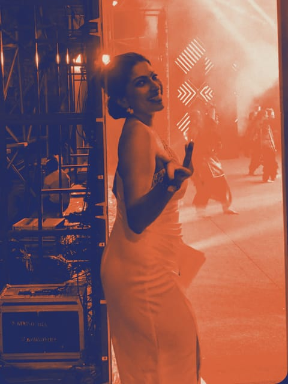
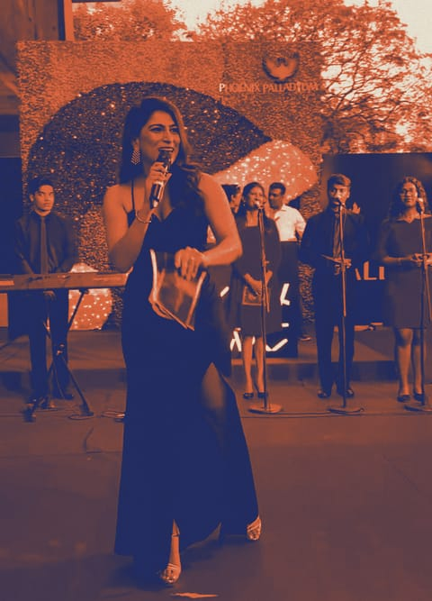
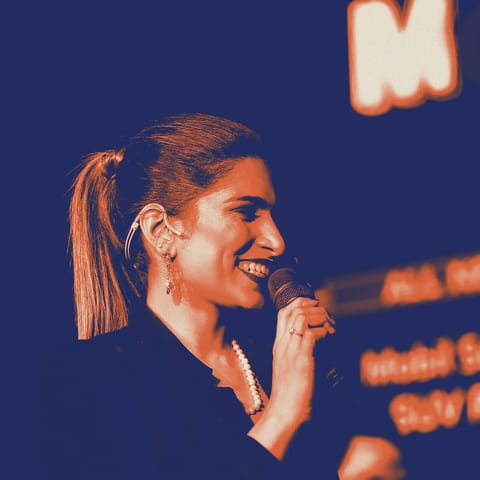
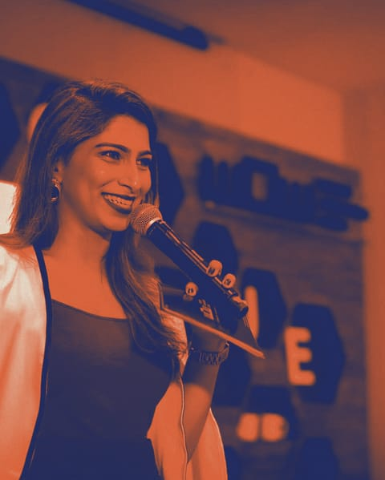

Feature 03 फ़ीचर · pp. 12–15
Cards in hand
Script cards and a programme booklet, 2024 back to 2019.
हाथ में कार्ड




Feature 03 फ़ीचर · pp. 12–15
Script cards and a programme booklet, 2024 back to 2019.
हाथ में कार्ड



